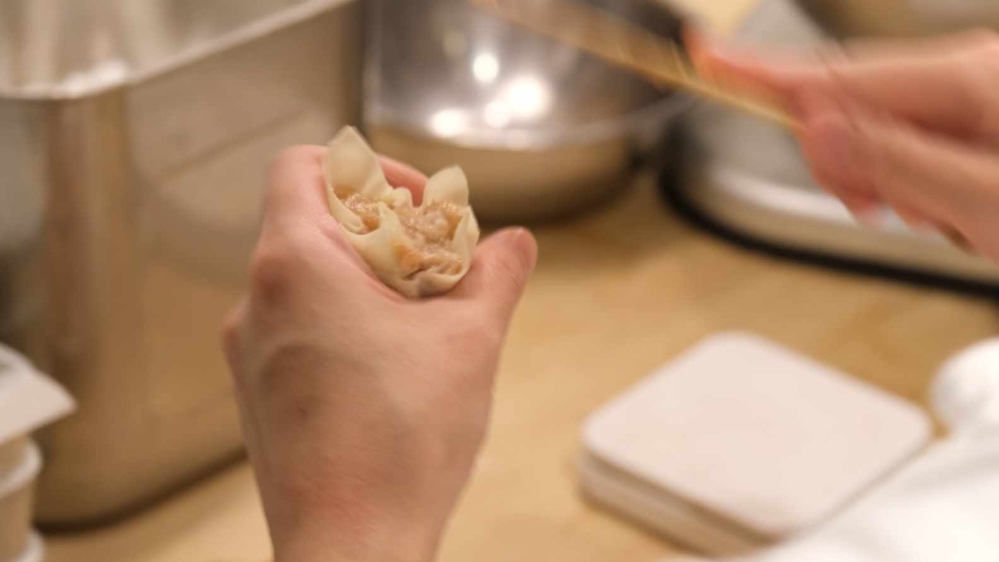

Heigei — 喜記
お腹はいっぱい。でも、これを食べずに
帰るのは、もったいない。
点心、焼物、お酒——存分に楽しまれたなら、あとは締めるだけです。わざわざ別の店へ移動する必要はありません。
お腹いっぱいのときでも、すっと入る。それがハーフサイズの海老ワンタン麺です。重くなく、でも満たされる。「食べて帰らないと損だ」と、きっと思っていただけます。
極細香港麺（生麺）
香港から直接仕入れる生麺です。現地さながらの独特の強いコシと歯ごたえ——日本のラーメンとは一線を画す、本物の「弾牙（バッガー）」な食感をそのままお届けします。
大地魚と羅漢果のスープ
乾燥させた大地魚（ダイテイユ）と海老の殻から丁寧に引いた、奥深いコクと香ばしさが特徴のスープ。さらに、長時間煮込んでも風味が変わらない天然甘味「羅漢果（ラカンカ）」を隠し味に。血糖値やカロリーに影響を与えない自然の甘みが、締めの一椀を翌朝の身体にも優しくします。

海老ワンタン（手包み）
プリプリの海老の食感を主役に、毎朝1個1個、店舗で手包みしています。冷凍に頼らず、その日仕込んだものだけをご提供します。
運ばれてきたとき、ワンタンは見えません。これは本場香港の伝統的なスタイルです。
麺の食感を損なわないよう、プリプリの海老ワンタンをどんぶりの底に忍ばせております。まずはスープと麺を、そのあと底からワンタンを引き上げて、本場の味をご堪能ください。
まずスープをひと口。大地魚と海老の香ばしい潮の香りを感じてください。
麺をすすります。独特の強いコシと歯ごたえ——これが香港麺です。
底からワンタンを引き上げ、プリプリの海老を噛み締めてください。混ぜながらお召し上がりいただくのが、本場のスタイルです。